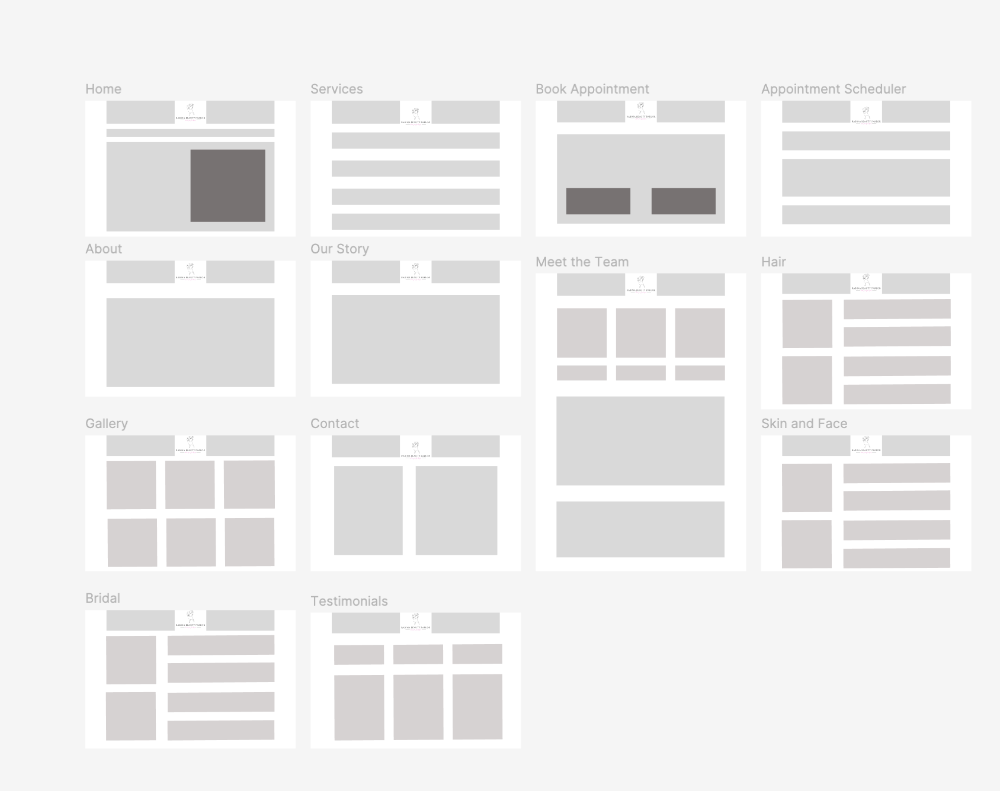

Rabina Beauty —
Salon & Training Center Website
A complete, accessible, 13-page website built from the ground up for a beauty salon and training center in Kathmandu.
Overview
Rabina Beauty Parlor & Training Center is a beauty salon and CTEVT-affiliated training center in Kathmandu, Nepal. I designed and built its website from scratch for my Web Development coursework — a full, production-style multi-page site covering services, bridal packages, training programs, appointment booking, the salon's story, its team, and client testimonials.
The brief. Unlike my UX case studies, which start from a research problem, this project started from a build brief: give a real-feeling local business a complete web presence — one that looks trustworthy, loads fast, and works for every visitor, including people using screen readers or older devices.
The goal. Ship a full, accessible, SEO-ready site — not a prototype — that a real salon could hand to a developer and launch as-is.
My role & deliverables
Sole designer & developer · information architecture across 13 pages · low-fidelity wireframes · custom HTML/CSS/JS build · typography & color system · accessibility pass · on-page SEO.
Wireframes
Before touching real markup, I sitemapped and wireframed every page — 13 low-fidelity layouts covering the full site, from the homepage down to the individual service and scheduling pages. Blocking out each page in gray boxes first let me settle the content hierarchy and page count before I ever wrote a line of CSS.

Information architecture
The site is organized around how a client actually decides to book: browse services, check pricing, see the work, then book. Services and About each carry a nested dropdown in the main nav so deeper pages stay one click away without cluttering the top-level menu.
- Home — hero, signature services, why-choose-us, testimonials preview, CTA.
- Services, plus dedicated Hair, Skin and Face, and Bridal pages.
- Book Appointment and a separate Appointment Scheduler for picking a date and time.
- About, with Our Story and Meet the Team nested underneath.
- Gallery — a grid of salon and client photos.
- Testimonials and Contact.
Design approach
I chose a palette and type system to match a salon, not a generic template: warm cream and charcoal ink, with a single sharp rose-pink accent pulled straight from the salon's own logo. Playfair Display carries the headings, Great Vibes adds a signature script flourish, and Jost handles body text — polished and feminine without tipping into cliché.
What I built
- A homepage with signature-service cards that carry real pricing badges, an icon-based "why choose us" grid, and a rotating testimonials preview.
- A real appointment-request form — name, service, preferred date, time preference, interests, and message.
- An About page telling the founder's story, plus a separate team page.
- A sitewide footer with quick links and a working site search.
- Accessibility built in from the first line of markup: a skip-to-content link,
aria-labelledbylandmarks, descriptive alt text on every image, visually-hidden headings for screen-reader structure, and a fully labeled nav.
Takeaways
My other case studies live in Figma — this one had to actually run in a browser. Building a real multi-page site taught me to think in information architecture (what goes in the nav, what's nested under what) and to bake accessibility in from the start rather than bolt it on at the end.